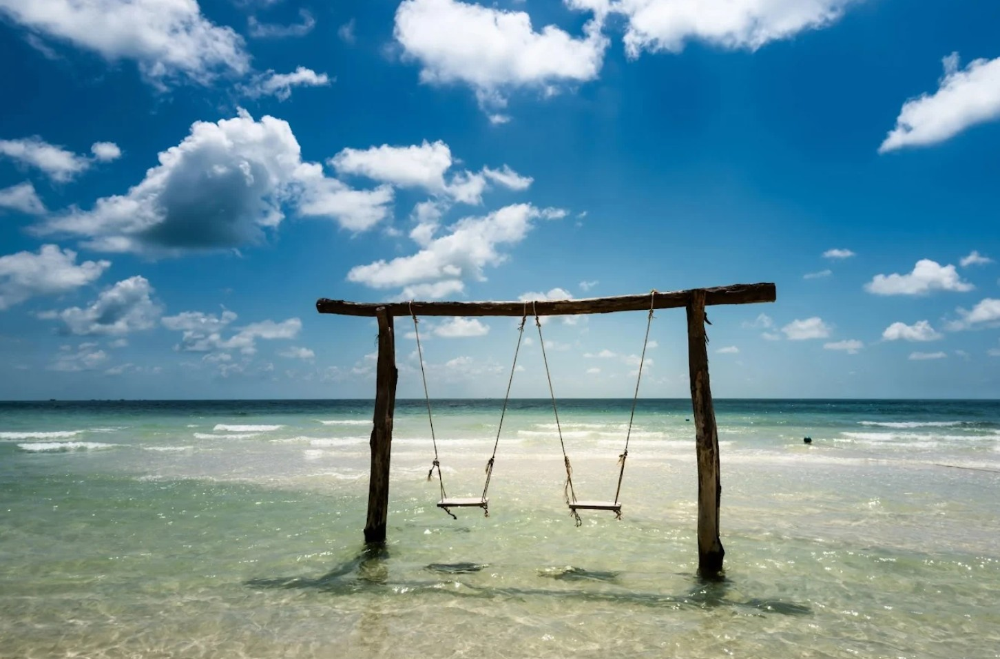
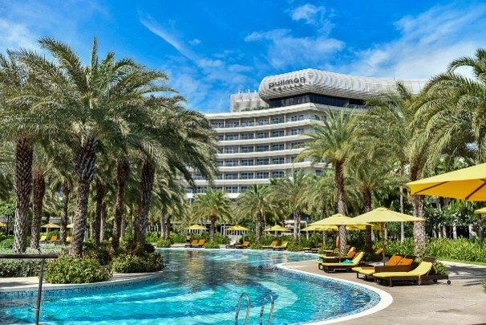
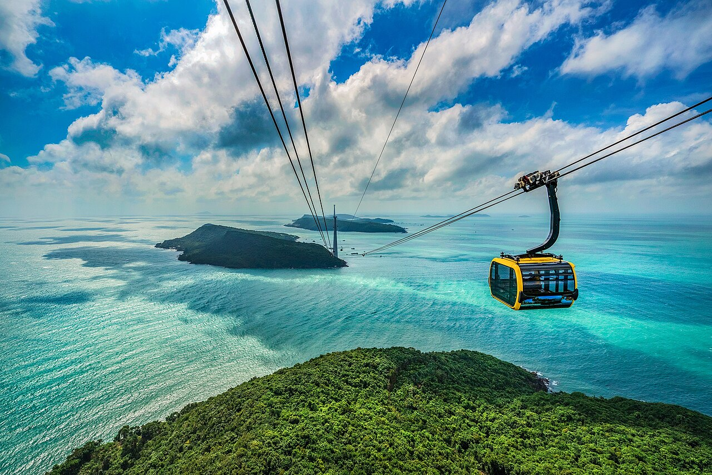

01 沙灘時間：星灘 Bãi Sao
星灘是富國島的海灘選擇之一。可以安排玩沙、看海或在岸邊休息；實際海色、海浪與整潔狀況會隨天氣與季節不同。
- 推薦理由
- 不用參加付費活動，也能把一段時間留給自然風景。
- 家庭旅遊提醒
- 是否游泳依現場海況與安全標示，留意日曬、遮蔭及洗手間需求；不要把照片中的平靜海面當成每日保證。
資料來源：官方：Sao Beach
03 / SOUTHERN VIETNAM
位於越南西南外海，富國島適合把假期排得鬆一點。沙灘、泳池和海景可以輪流安排，想出門時再往南端搭香島纜車。選對住宿位置，比每天換好幾個景點更影響這趟旅行的步調。
選一個住宿據點，把沙灘、飯店休息與南端行程分開安排。

A CLOSER LOOK
挑喜歡的體驗，留一點時間給休息與沿途風景。

星灘是富國島的海灘選擇之一。可以安排玩沙、看海或在岸邊休息；實際海色、海浪與整潔狀況會隨天氣與季節不同。
資料來源：官方：Sao Beach

海島旅行不必每天都在外面。選一間符合預算與需求的住宿，把早餐、泳池與休息排進行程，也是富國島的玩法。可依喜歡的沙灘與同行者需求挑選據點，不必每天搬行李。
資料來源：官方：富國島度假概況；住宿安排為編輯建議

香島纜車連接富國島南端與香島一帶，行進間能看見島嶼與海上風景。票種、包含設施與當日運行安排需在出發前確認。
MAKE TIME FOR THE JOURNEY
以下為編輯行程建議，並非固定套裝路線；請依天氣、同行者體力與實際預訂調整。
辦理入住、熟悉飯店與周邊，先不排緊湊跨島移動。
核對運行與票券後出發，回住宿後以晚餐和休息為主。
依住宿位置、天氣與航班決定是否去星灘；若時間不夠，就留在住宿附近休息。
每一天保留一個可以省略的安排，比趕完清單更容易享受旅行。
BEFORE YOU GO
交通概況參考：Vietnam Tourism：Phu Quoc，更新日期：2026-11-15。班次、費用及接送服務另行確認。
以上為規劃建議，不是場館設施或服務保證。
WHERE NEXT?
內容更新：。行程、推薦理由與家庭提醒為編輯建議；票價、場次及開放狀況請於出發前向官方確認。照片為景觀紀錄，不代表當日天氣或最新設施。
網路圖片縮小尺寸並作版面裁切；CC BY-SA 圖片的衍生版本沿用相同授權。使用者提供照片依其提供脈絡標示，來源狀態如實記錄。